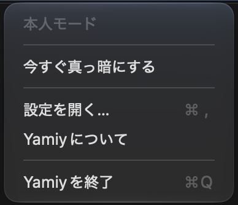

Mac の画面を、真っ暗なまま止めずに保つメニューバーアプリ

AI エージェントや自動処理を Mac で常時走らせていると、画面はつけっぱなしになります。中身を他人に見られたくない。でもディスプレイをスリープさせると、リモート操作や自動処理の都合が悪くなる場面があります。
Yamiy はその間で使います。明るさを最低に固定し、明るさキーも効かなくして、画面を物理的に真っ暗に保ちます。画面そのものは起きているので、キャプチャもリモート操作もそのまま動きます。本人が Touch ID でロックを解除したときだけ画面が戻り、5 分触らなければ自動で真っ暗に戻ります。
自動調節などに押し戻されても、0.15 秒ごとに最低へ戻し続けます。
キーを入口で付け替えるので、押しても一瞬たりとも画面は光りません。
入口は画面ロック解除（Touch ID／パスワード）だけ。無操作 5 分で自動復帰します。
キャプチャやリモート操作は明るさと無関係に動き続けます（実測済み）。
パネルの「設定を開く…」からは、本人モードの明るさ、真っ暗に戻るまでの無操作時間、ログイン時に起動するかどうかを変更できます。
ソースからビルドします（Xcode コマンドラインツールが必要です）。
git clone https://github.com/snowkiss13/yamiy.git cd yamiy ./build.sh open build/Yamiy.app
ログイン時に自動で起動させたい場合は、アプリ内の設定で「ログイン時に起動」をオンにしてください。署名していないビルドは初回起動時に Gatekeeper で止められます。その場合は Finder で右クリック → 開く を選んでください。
動作環境: Apple Silicon Mac、macOS 14 以降（開発と確認は macOS 27）。明るさの制御に DisplayServices の私的 API を使うため、Mac App Store では配布できません。
If you run AI agents or automations on your Mac around the clock, the display stays on. You do not want anyone peeking at what is on it — but putting the display to sleep gets in the way of remote control and automation.
Yamiy sits in between. It holds the brightness at zero and disables the brightness keys, so the panel is physically dark while the machine stays fully awake: screen capture and remote control keep working, because brightness and the framebuffer are independent (verified). The screen comes back only when you unlock it with Touch ID, and it goes dark again by itself after five minutes without input.
Yamiy is open source under the MIT License. Build it from source with ./build.sh and see the GitHub repository for details. It uses the private DisplayServices API, so it cannot be distributed on the Mac App Store. Requires an Apple Silicon Mac with macOS 14 or later.